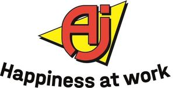

Trade Mark Journal No.2025/046 14 November 2025
WO0000001880605 (6,7,9,11,12,20,35,36,37,39)
Office of origin: European Union Intellectual Property Office (EUIPO)
Date of International Registration:27 August 2024
Date of designation in the UK:
27 August 2024

The mark contains the colours yellow, red and black.
International priority date claimed: 28 February 2024
(European Union Intellectual Property Office (EUIPO))
(018992174)
- Class 6
- Common metals and their alloys; building materials of metal; buildings of metal, including transportable buildings; railway material of metal; non-electric cables and wires of common metal; ironmongery, small items of metal hardware; safety cashboxes; scaffolding of metal; loading pallets of metal; transport pallets of metal; storage racks of metal; tubes of metal; pipe supports and clamps of metal; swimming pools [structures] of metal; paint spraying booths of metal; fences of metal; ladders of metal; posts of metal, including for electric power lines; framework of metal for building; gutter pipes of metal.
- Class 7
- Machine tools; motors and engines (except for land vehicles); machine coupling and transmission components (except for land vehicles); excavators, diggers (machines), handling apparatus for loading and unloading, elevating apparatus, mobile lifting apparatus for trucks and waggons, lifting apparatus, winches; concrete mixers [machines]; drilling machines; jacks [machines]; electric hand drills; hand-held tools, other than hand-operated; elevators [lifts]; planing machines; loading ramps; painting machines; paint spray guns; sieves (machines or parts of machines); lathes [machine tools]; electric welding machines; spin driers [not heated]; pneumatic hammers, pumps, motors, engines and machines; compressed air guns for the extrusion of mastics; lawnmowers [machines]; electric welding apparatus; electric soldering irons and soldering apparatus; tool carriers, tractors and other vehicles towed tools and accessories, namely ploughs, snowblowers, snow blades and snow clearing tools, sweeping units and machines and lawnmowers and mechanical parts relating to the aforesaid goods, compressed air parts and machine parts; machines for wrapping; labellers; shredding apparatus; electric welding apparatus; electric soldering irons and soldering apparatus; electric soldering irons and soldering apparatus.
- Class 9
- Photographic and optical apparatus and instruments and weighing, measuring, signalling and life-saving apparatus and instruments; apparatus for recording, transmission or reproduction of sound or images; magnetic data carries; data processing equipment and computers; fire-extinguishing apparatus; accumulators, electric; fire alarms; remote control apparatus; electric installations for the remote control of industrial operations; safety helmets; cables, electric; alarm bells, electric; signal bells; distribution consoles and control panels (electricity); electric couplings and switchboxes; electricity measuring instruments; measuring apparatus and tools; precision measuring apparatus; scales and precision balances; nets for protection against accidents; protection devices for personal use against accidents; clothing for protection against accidents, irradiation and fire; protective masks; safety tarpaulins; safety restraints, other than for vehicle seats and sports equipment; transformers [electricity]; carpenters' rules; igniting apparatus, electric, for igniting at a distance; bells [warning devices]; flashing lights [luminous signals]; warning triangles, including vehicle breakdown warning triangles; spirit levels; theodolites; monitoring apparatus, other than for medical purposes; monitoring programs, computer programs, recorded; application software; mobile apps; computer application software for use in implementing the internet of things [iot]; computer hardware modules for use in electronic devices using the internet of things [iot].
- Class 11
- Apparatus for lighting, heating, steam generating, cooking, refrigerating, drying, ventilating, water supply and sanitary purposes; torches, flash lights, lamps.
- Class 12
- Apparatus for locomotion by land, air or water; tractors, engines for land vehicles, tools and accessories for tool trolleys and tractors; couplings for land vehicles; carts, goods handling carts, tilting-carts, trailers; sweeping carts, two-wheeled trolleys; tipping bodies for lorries [trucks]; battery-operated transport vehicles; electric land vehicles; tricycles; bicycles; ladder trucks; push scooters [vehicles]; cleaning trolleys; handling carts; trolleys with shelves; parcel carts; platform carts; picking carts; warehouse carts; roll cage trolleys; handbarrows; pallet trolleys; wheelbarrows; tool trolleys.
- Class 20
- Furniture, mirrors, picture frames; work benches; trestles [furniture]; metal tables; cabinet work; workbenches, not of metal; transport and loading pallets, not of metal; ladders of wood or plastics; containers, not of metal, for storage, transport and packaging; boxes of wood or plastic; furniture shelves; shelves for file cabinets; lockers; shelving units; coat hangers; coatstands; coat racks; office furniture; medicine cabinets; furniture casters, not of metal; umbrella stands; window blinds [indoor]; racks [furniture]; benches [furniture]; wall chests; steps [ladders], not of metal; cupboards for office requisites.
- Class 35
- Advertising; business management; business administration; office functions services; distribution of samples; import-export agency services; business consultancy and advice; business and advertising information services; customer information on the sale of personal property; input, processing, checking and retrieval of data in databases; processing and/or checking of computer data; retrieval of computerised business information; management of computerised data, databases, files and registers; preparation of computerised business information; organisation of trade fairs and exhibitions for commercial or advertising purposes; publication and distribution of printed matter (advertising); sponsorship search consultancy services; advertising, including promotion of products and services of third parties through sponsoring arrangements and licence agreements relating to international sports' events; sponsorship search; promotional sponsorship; retail or wholesale services, in relation to the following goods: fittings for storage, industry, offices, schools and sports facilities and retail or wholesale services, in relation to the following goods: furniture, sweepers and strapping machines, trolleys, ratchet sets, hammers, tongs and pliers, axes, cutters, saws, sledgehammers, staple guns, trolleys (carriages), rugs cleaning preparations and waste-sorting equipment, wheeled cabinets, pallet racks, stage, ploughs, snow blowers, snow blades and snow clearing tools, lawnmowers, push scooters (vehicles); online retail services in relation to the following goods: fittings for storage, industry, offices, schools and sports facilities and online retail services in relation to the following goods: furniture, sweepers and strapping machines, trolleys, ratchet sets, hammers, tongs and pliers, axes, cutters, saws, sledgehammers, staple guns, trolleys (carriages), rugs, cleaning preparations, waste-sorting equipment, wheeled cabinets, pallet racks, stage, ploughs, snow blowers, snow blades and snow clearing tools, lawnmowers, push scooters (vehicles); sales promotion (for others); advertising; administration of bonus programs; demonstration of goods; public relations; retail services in relation to the following goods: furniture, mirrors, picture frames, workbenches, trestles [furniture], tables of metal, cabinet work, carpenters' benches, not of metal, transport pallets and pallets, non-metal tubes, ladders of wood or plastics, containers, non-metal tubes, the aforesaid goods for storage, transport and packaging, casings, boxes, cases, etuis of wood or plastics, furniture shelves, shelves for filing-cabinets (furniture), cabinets, shelves for storage, coathangers, coatstands, clothes stretchers, office furniture, medicine cabinets, casters [furniture], non-metal tubes, umbrella stands, interior venetian blinds, racks [furniture], cleaning trolleys, storage boxes and storage boxes [office requisites], connection fittings, trolleys, goods handling carts, tilting-carts, semi-trailers, sweeping carts, luggage trucks, tricycles, scooters, cleaning trolleys, office perforators, hook and eyes, staple guns, adhesive tapes, hanging folders, file trolleys, whiteboards, pictures, sound absorbers, tool organizer boards, memorandum boards, packing tape, office bags, duckboards, non-metal tubes, bench seats, wardrobes, steps [ladders], not of metal, aid kits, plastic bandages, board trolleys, ladders, poles, traffic pillars, barrier poles, shredders, laminators, strapping machines, hoists, lifting installations for trucks and trolleys (carriages), hoisting apparatus, winches, jacks (machines), mechanically operated hand tools, loading ramps, pneumatic hammers, compressed air pumps, pneumatic power engines and compressed air machines, compressed air guns for the extrusion of mastics, ploughs, snow blowers, snow clearing tools, hammers, scales and precision balances, parcel scales, letter scales, carpenters' rules, signage, hearing protectors, apparatus for cardiac defibrillation, lamps, armatures, flares, duckboards, mops, cleaning kits, cleaning trolleys and rolling buckets, refuse containers, tarpaulins, sacks, ropes, gloves for clothing, rugs, matting for entrances, work mats, floor protectors, spanish walls, scooters.
- Class 36
- Finance services; monetary services; management of payments in relation to credit cards; electronic funds transfer; estate management.
- Class 37
- Office machines and equipment installation, maintenance and repair.
- Class 39
- Transport; packing and storage of goods; storage; delivery of goods, freighting; hauling.
AJ Produkter AB
Representative: Haseltine Lake Kempner LLP, One Portwall Square, Portwall Lane Bristol BS1 6BH UNITED KINGDOM